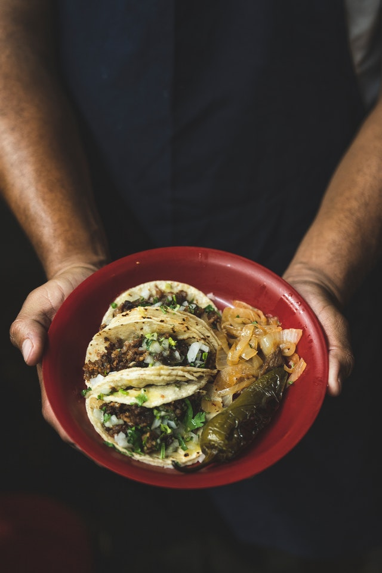

Back to Home
Eazy Chorizo Street Tacos

Description
By: evostoplight
This is one of my all time favorite style of tacos
Ingredients
- 1 chorizo sausage link, casing removed and meat crumbled
- 2 tablespoons chipotle peppers in adobo sauce
- 4 corn tortillas
- 2 tablespoons chopped onion, or to taste
- 2 tablespoons chopped fresh cilantro, or to taste (optional)
Instructions
-
Mix chorizo and chipotle peppers in adobo sauce together in a bowl.
-
Preheat oven to 350 degrees F (175 degrees C). In a large skillet over
medium-high heat, brown beef and season with salt and pepper; drain.
Stir in spaghetti sauce and garlic and simmer 5 minutes.
-
Heat a skillet over medium-high heat; add chorizo mixture and cook until crisp, 5 to 7 minutes. Transfer chorizo to a plate, reserving grease in the skillet.
-
Heat tortillas in the reserved grease in skillet over medium heat until warmed, 1 to 2 minutes per side. Stack 2 tortillas on top of each other for each taco. Fill with chorizo, onion, and cilantro.
Nutrition Facts
- 262 calories
- protein 10.4g
- carbohydrates 25.8g
- fat 13.2g
- cholesterol 26.4mg
- sodium 465.6mg